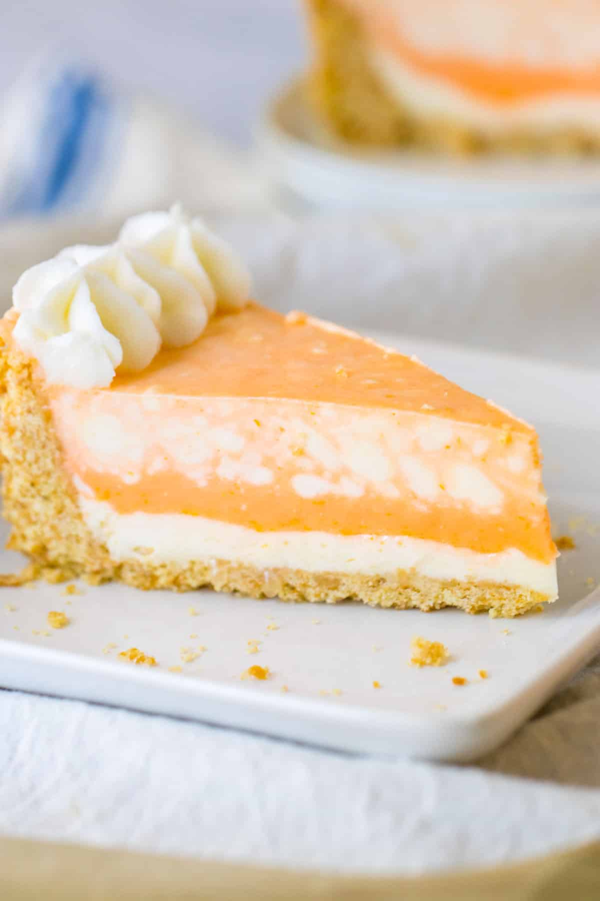

Homepage
Sparkling Orange Cream Pie Recipe

This dessert is simple and refreshing and great for an easy summertime treat. Garnish as desired.
Ingredients
- 1 (15 ounce) can mandarin oranges, drained, with juice reserved
- ¼ cup water, or as needed
- 1 (3 ounce) package orange-flavored gelatin (such as Jell-O®)
- 1 cup orange soda, chilled
- ½ cup frozen whipped topping, thawed
- 1 (9 inch) prepared graham cracker crust
Steps
- Pour reserved mandarin orange juice into a measuring cup. Add enough water to make 3/4 cup. Bring juice mixture to a boil in a saucepan.
- Pour orange-flavored gelatin into a small bowl. Stir in boiling juice mixture until dissolved. Chill until slightly cooled, about 15 minutes.
- Stir orange soda gently into gelatin mixture. Measure out 1/2 cup gelatin mixture into a bowl. Whisk in whipped topping until smooth. Pour into crust.
- Refrigerate crust until topping is cool, about 15 minutes. Arrange mandarin orange segments on top of the crust. Chill again, about 15 minutes.
- Spoon remaining gelatin mixture over the orange segments and refrigerate until firm, about 3 hours.
You'll Also Love